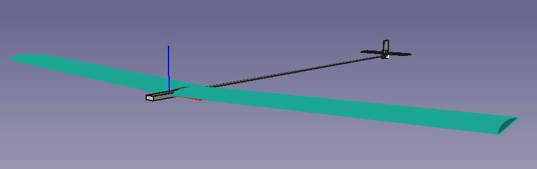
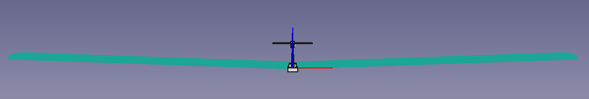
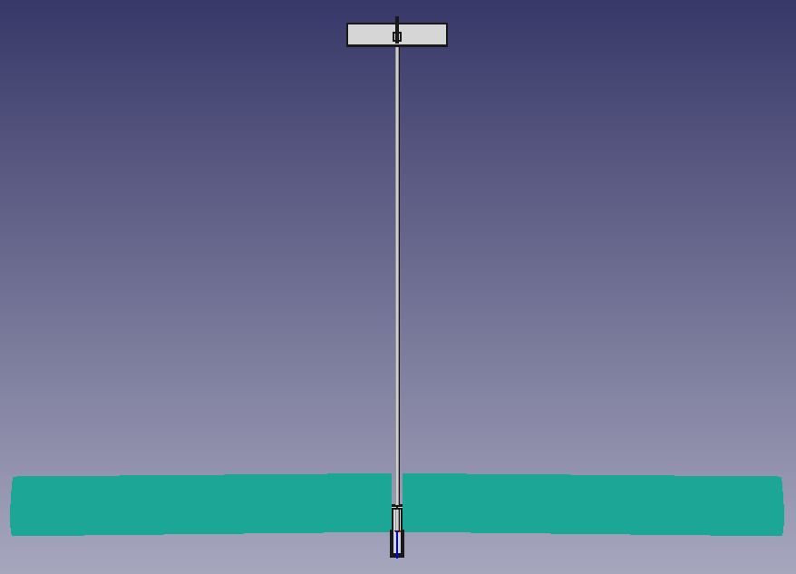

Iteration 6: Stability¶
from unyt import km, m, mm, inch, g, kg, hr, minute, s, degree, radian, volt
from IPython.display import Video
I said in Iteration 3: Propulsion that I wasn’t goin to think too much about stability. I’ve changed my mind about that.
In this iteration I’ll be using MIT OpenCourseWare’s Unified Engineering labs 6: S/L8 “Aircraft Design for Stability and Control / Basic Aircraft Design Rules” notes. Bit of a mouthful… It’s contents describe the basic criteria for stable flight.
Also worth mentioning: because I’ll be using a single 4000mAh 6S LiPo, I’m not going to put a batteries in the wing. This means I’ll be extending the fuselage forward for a more traditional design.
Center of Gravity Position¶
I’ll b using the following data from iteration 5:
b = 3050*mm # wingspan
c = 230*mm # chord
S = b*c # wing area
AR = b**2/S
print(f"AR: {AR}")
AR: 13.26086956521739 dimensionless
As a starting point I’ll assume the Center of Gravity (GC) can be placed at 33% cord length. Once I’ve calculated the neutral point I’ll come back to this.
xcg = (1/3)*c
Horizontal Tail Sizing¶
…and assuming a 1/2 horizontal stabilizer (HS) cord center of lift and 1/3 cord CG:
ch = 75*mm # Horizontal stabilizer cord
bh = 400*mm # ..wingspan
lh = 1945*mm # ..moment arm
xhscl = (1/2)*ch
Sh = ch*bh # HS area
ARh = bh**2/Sh # = bh/ch
print(f"ARh: {ARh}")
Vh = (Sh*lh)/(S*c)
print(f"Vh: {Vh}")
ARh: 5.333333333333333 dimensionless
Vh: 0.36164740153088104 dimensionless
A well-behaved aircraft typically has a Vh which falls in the following range:
Vh = 0.30 … 0.60
If Vh is too small, the aircraft’s pitch behavior will be very sensitive to the CG location. It will also show poor tendency to resist gusts or other upsets, and generally “wander” in pitch attitude, making precise pitch control difficult.
.36, not great, not terrible
Video("3.6-roentgen.mp4", width=600)
Should probably increase it a bit (maybe by 25% to get get above 0.45).
Approximate NP (neutral point) location xnp:
xnpr = .25+((1+2/AR)/(1+2/ARh))*(1-4/(AR+2))*Vh
xnp = xnpr*c
print(f"xnp ratio of c: {xnpr}")
print(f"xnp: {xnp}")
xnp ratio of c: 0.47334826109448147 dimensionless
xnp: 108.87010005173074 mm
So my 33% cord CG assumption may have been a little too far forward. We can check by calculating the Static Margin (SM).
SM = (xnp-xcg)/c
print(f"S.M.: {SM}")
S.M.: 0.1400149277611482 dimensionless
Please do read the Lab 8 notes document linked at the top. It is really insightful and has some nice illustrations.
Criterea given there:
In general, the small positive S.M. suggested by rule (2) is the ideal situation. S.M. = +0.05 … +0.15 (2)
Like I said, maybe a little bit too far forward.
It doesn’t matter that much as I have quite a bit of room for CG tuning by shifting the battery. If I want to shift it forward I can 3D print a more extended fuselage.
Vertical Tail Sizing¶
cv = 75*mm # Vertical stabilizer cord
bv = 100*mm # ..wingspan (height?)
lv = lh # ..moment arm
xvscl = (1/2)*ch
Sv = cv*bv # VS area
ARv = bv**2/Sv # = bv/cv
print(f"ARv: {ARv}")
Vv = (Sv*lv)/(S*c)
print(f"Vv: {Vv}")
ARv: 1.3333333333333333 dimensionless
Vv: 0.09041185038272026 dimensionless
Most well-behaved aircraft typically have a Vv which falls in the following range: Vv = 0.02 … 0.05
So yeah, vertical tail size could be smaller if necessary.
Dihedral Angle¶
Because I’ll be 3D printing the fuselage and the wings will be detachable, adding dihedral is fairly trivial. As a starting point I’ll pick 2° dihedral.
Υ = 2*degree # Dehedral angle (Upsilon)
CL = 0.1*(s**2/m) # From iteration 5
Spiral Stability¶
B = (lv/b)*(Υ/CL)
print(f"B = {B}")
B = 12.754098360655737 degree*m/s**2
The dihedral angle of the wing, denoted by Υ in Figure 1, provides some degree of natural spiral stability. A spirally-unstable aircraft tends to constantly increase its bank angle at some rate, and therefore requires constant attention by the pilot. Conversely, a spirally-stable aircraft will tend to roll upright with no control input from the pilot, and thus make the aircraft easier to fly.
B > 5: spirally stable
B = 5: spirally neutral
B < 5: spirally unstable
So excellent, although as I should probably say more often: I have no idea what I’m doing and have a hunch these units aren’t correct, which would make this metric useless. Please help.
I guess I’ll just have to see how the plane behaves in-flight.
Roll Control¶
Lakehopper has ailerons, so this might be of less interest.
A criterion for adequate roll authority is obtained by the product of Vv and B
VvB = Vv * B
print(f"VvB = {VvB}")
VvB = 1.1531216327501042 degree*m/s**2
VvB = 0.10 … 0.20
The 0.10 value will likely give marginal roll control, while 0.20 will give very effective control.
Excellent, but again, probably wrong.
Steady Sideslip in Turns¶
As noted in the lab notes, for an airplane with ailerons, the inward rolling moment can be cancelled.
Conclusion¶
According to these criterea, and if my calculations are correct, the plane should be pretty stable provided that I:
Increase the horizontal stabilizer slightly (~25%, 70 🠖 88mm wing span )
Use my proposed 2° dihedral
Put the CG no further than ~30% cord length forward or ~47% backward
I implemented the first two changes in the FreeCAD model for iteration 6, which now looks like this:
  